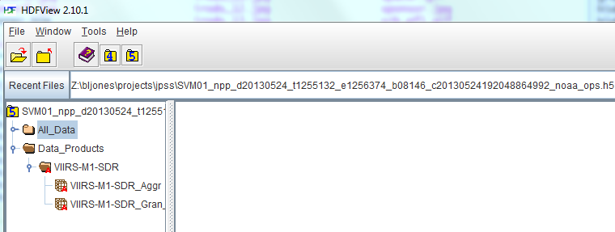
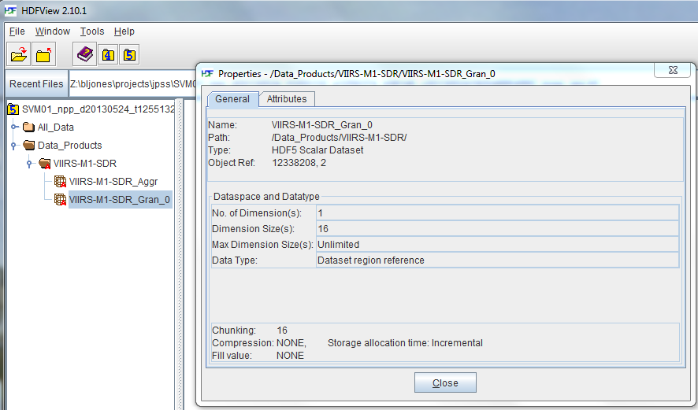
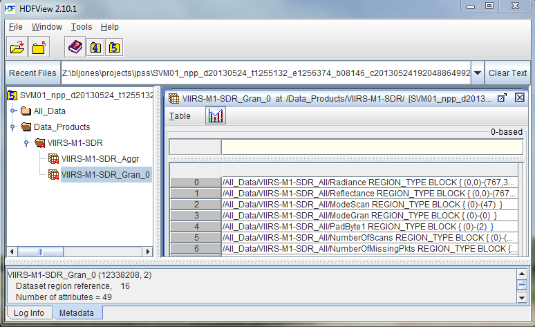
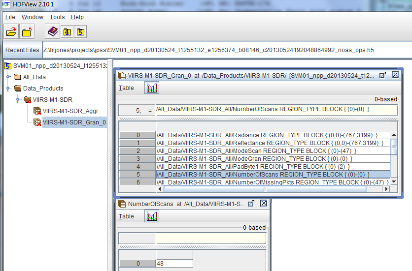
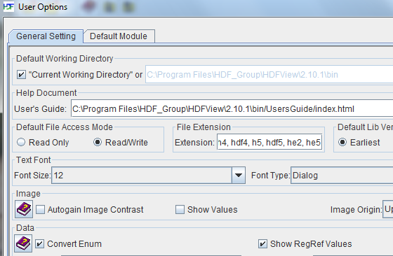
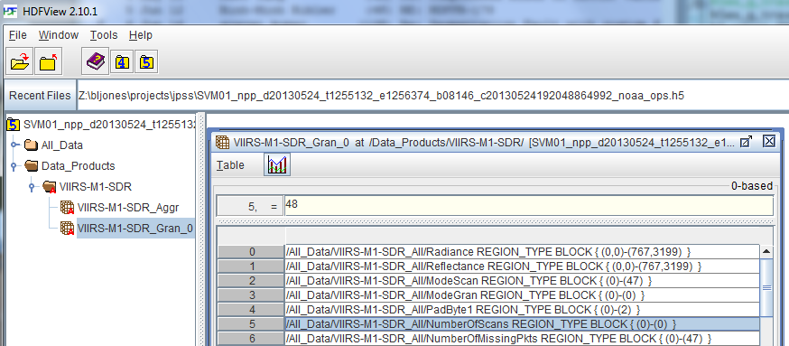
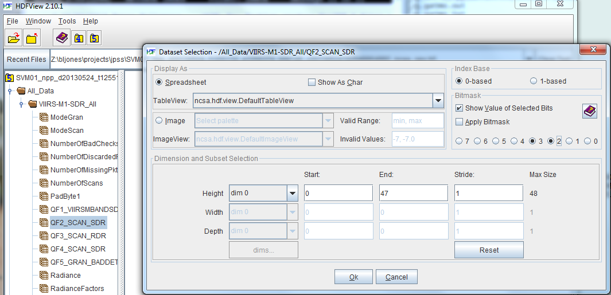

Please see The HDF Group's new Support Portal for the latest information.
This tutorial illustrates how to use the HDF5 tools to examine NPP files from the JPSS project. The following files are discussed:
-
SVM09_npp_d20120229_t0849107_e0854511_b01759_c20120229145452682127_noaa_ops.h5 (
gzipped file )
SVM01_npp_d20130524_t1255132_e1256374_b08146_c20130524192048864992_noaa_ops.h5 ( gzipped file )
Topics Covered:
Determining File Contents
The first thing you may want to do is determine what is in your file. You can use the command-line tools or HDFView to do this:
JPSS NPP files all contain two root level groups:
| Group | Description |
| /All_Data |
Contains the raw data and optional geo-location information. |
| /Data_Products |
Contains a dataset ending in "Aggr" with references to objects in the /All_Data group. Contains granules (datasets with a name ending in "Gran_#") with references to selected regions in datasets under /All_Data. |
h5dump
With h5dump you can see a list of the objects in the file using the -n option:
h5dump -n <file> |
For example:
$ h5dump -n SVM09_npp_d20120229_t0849107_e0854511_b01759_c20120229145452682127_noaa_ops.h5
HDF5 "SVM09_npp_d20120229_t0849107_e0854511_b01759_c20120229145452682127_noaa_ops.h5" {
FILE_CONTENTS {
group /
group /All_Data
group /All_Data/VIIRS-M9-SDR_All
dataset /All_Data/VIIRS-M9-SDR_All/ModeGran
dataset /All_Data/VIIRS-M9-SDR_All/ModeScan
dataset /All_Data/VIIRS-M9-SDR_All/NumberOfBadChecksums
dataset /All_Data/VIIRS-M9-SDR_All/NumberOfDiscardedPkts
dataset /All_Data/VIIRS-M9-SDR_All/NumberOfMissingPkts
dataset /All_Data/VIIRS-M9-SDR_All/NumberOfScans
dataset /All_Data/VIIRS-M9-SDR_All/PadByte1
dataset /All_Data/VIIRS-M9-SDR_All/QF1_VIIRSMBANDSDR
dataset /All_Data/VIIRS-M9-SDR_All/QF2_SCAN_SDR
dataset /All_Data/VIIRS-M9-SDR_All/QF3_SCAN_RDR
dataset /All_Data/VIIRS-M9-SDR_All/QF4_SCAN_SDR
dataset /All_Data/VIIRS-M9-SDR_All/QF5_GRAN_BADDETECTOR
dataset /All_Data/VIIRS-M9-SDR_All/Radiance
dataset /All_Data/VIIRS-M9-SDR_All/RadianceFactors
dataset /All_Data/VIIRS-M9-SDR_All/Reflectance
dataset /All_Data/VIIRS-M9-SDR_All/ReflectanceFactors
group /Data_Products
group /Data_Products/VIIRS-M9-SDR
dataset /Data_Products/VIIRS-M9-SDR/VIIRS-M9-SDR_Aggr
dataset /Data_Products/VIIRS-M9-SDR/VIIRS-M9-SDR_Gran_0
dataset /Data_Products/VIIRS-M9-SDR/VIIRS-M9-SDR_Gran_1
dataset /Data_Products/VIIRS-M9-SDR/VIIRS-M9-SDR_Gran_2
dataset /Data_Products/VIIRS-M9-SDR/VIIRS-M9-SDR_Gran_3
}
}
|
In the output above you can see that there are four granules (ending in Gran_#) in the /Data_Products/VIIRS-M9-SDR/ group.
h5ls
With h5ls you can see a list of the objects in the file using the -lr options. The h5ls utility also shows shape and size (dataspace) information about datasets.
h5ls -lr <file> |
For example:
Note that the Inf indicates that those datasets are appendable or unlimited in size.
$ h5ls -lr SVM09_npp_d20120229_t0849107_e0854511_b01759_c20120229145452682127_noaa_ops.h5
/ Group
/All_Data Group
/All_Data/VIIRS-M9-SDR_All Group
/All_Data/VIIRS-M9-SDR_All/ModeGran Dataset {4/Inf}
/All_Data/VIIRS-M9-SDR_All/ModeScan Dataset {192/Inf}
/All_Data/VIIRS-M9-SDR_All/NumberOfBadChecksums Dataset {192/Inf}
/All_Data/VIIRS-M9-SDR_All/NumberOfDiscardedPkts Dataset {192/Inf}
/All_Data/VIIRS-M9-SDR_All/NumberOfMissingPkts Dataset {192/Inf}
/All_Data/VIIRS-M9-SDR_All/NumberOfScans Dataset {4/Inf}
/All_Data/VIIRS-M9-SDR_All/PadByte1 Dataset {12/Inf}
/All_Data/VIIRS-M9-SDR_All/QF1_VIIRSMBANDSDR Dataset {3072/Inf, 3200/Inf}
/All_Data/VIIRS-M9-SDR_All/QF2_SCAN_SDR Dataset {192/Inf}
/All_Data/VIIRS-M9-SDR_All/QF3_SCAN_RDR Dataset {192/Inf}
/All_Data/VIIRS-M9-SDR_All/QF4_SCAN_SDR Dataset {3072/Inf}
/All_Data/VIIRS-M9-SDR_All/QF5_GRAN_BADDETECTOR Dataset {64/Inf}
/All_Data/VIIRS-M9-SDR_All/Radiance Dataset {3072/Inf, 3200/Inf}
/All_Data/VIIRS-M9-SDR_All/RadianceFactors Dataset {8/Inf}
/All_Data/VIIRS-M9-SDR_All/Reflectance Dataset {3072/Inf, 3200/Inf}
/All_Data/VIIRS-M9-SDR_All/ReflectanceFactors Dataset {8/Inf}
/Data_Products Group
/Data_Products/VIIRS-M9-SDR Group
/Data_Products/VIIRS-M9-SDR/VIIRS-M9-SDR_Aggr Dataset {16/Inf}
/Data_Products/VIIRS-M9-SDR/VIIRS-M9-SDR_Gran_0 Dataset {16/Inf}
/Data_Products/VIIRS-M9-SDR/VIIRS-M9-SDR_Gran_1 Dataset {16/Inf}
/Data_Products/VIIRS-M9-SDR/VIIRS-M9-SDR_Gran_2 Dataset {16/Inf}
/Data_Products/VIIRS-M9-SDR/VIIRS-M9-SDR_Gran_3 Dataset {16/Inf}
|
HDFView
If you open the file in HDFView, it will display the file and the root level groups within it in the TreeView on the left. An HDF5 file is a folder with a "5" in the middle, followed by the file name. There are two folders (groups) within the JPSS file (All_Data/ and Data Products/), which you can select to see their contents:
If you click twice with the left-mouse button on a folder or group in the TreeView, the contents of the folder will be listed. If you click twice on an object such as a dataset, a window with the object's values will be displayed on the right side of the HDFView screen.
Underneath the VIIRS-M1-SDR folder are what HDF5 calls datasets. The scarlet letter "A" attached to the group and datasets under Data_Products/ indicates that there are attributes associated with them.
Viewing the User Block
All JPSS files contain a user block in XML with information about the file. The user block is an optional space allocated at the beginning of an HDF5 file that is not interpreted by the HDF5 library. Its size is a multiple of 512.
Since the user block in JPSS files is stored in ASCII and it is stored at the beginning of an HDF5 file, you could use a text editor or viewer to examine it. However, there are HDF5 utilities that can help with this:
| Utility | Description |
| h5unjam | Extracts a user block from an HDF5 file |
| h5dump | The -B (--superblock) option displays the size of the user block in an HDF5 file |
h5unjam
The Add or Remove User Block from File tutorial topic discusses the use of the h5jam and h5unjam utilities for adding or removing a user block from a file. An input HDF5 file (-i), output HDF5 file (-o), and user block text file (-u) can be specified with these tools. You can use the h5unjam tool to extract and view the user block in a JPSS file:
h5unjam -i <Input HDF5 File> -o <Output HDF5 File> -u <User Block File> |
For example this command will extract the user block into the file UB.xml:
$ h5unjam -i SVM09_npp_d20120229_t0849107_e0854511_b01759_c20120229145452682127_noaa_ops.h5
-o svm09-noUB.h5 -u UB.xml
|
The input HDF5 file remains unchanged. The output HDF5 file will not contain the user block. The UB.xml file contains the user block which can be viewed with a browser.
h5dump
The h5dump utility has the -B (--superblock) option for displaying the superblock in an HDF5 file. The superblock contains information about the file such as the file signature, file consistency flags, the number of bytes to store addresses and size of an object, as well as the size of the user block:
h5dump -B (--superblock) |
Below is an example (Unix):
$ h5dump -B -H SVM09_npp_d20120229_t0849107_e0854511_b01759_c20120229145452682127_noaa_ops.h5 | more
HDF5 "SVM09_npp_d20120229_t0849107_e0854511_b01759_c20120229145452682127_noaa_ops.h5" {
SUPER_BLOCK {
SUPERBLOCK_VERSION 0
FREELIST_VERSION 0
SYMBOLTABLE_VERSION 0
OBJECTHEADER_VERSION 0
OFFSET_SIZE 8
LENGTH_SIZE 8
BTREE_RANK 16
BTREE_LEAF 4
ISTORE_K 32
USER_BLOCK {
USERBLOCK_SIZE 1024
}
}
-- >8 -- cut --
|
Once you have the size of the user block, you can extract it from the file using system commands. For example, on Unix platforms you can use the head command-line tool:
head -c <USERBLOCK_SIZE> <JPSS File> >& USERBLOCK.xml |
There are Unix tools for Windows that may work, such as CoreUtils for Windows.
Examining a Granule
h5dump
There are several options that you may first want to use when examining a granule with h5dump:
| Option | Description |
-H, --header |
Prints header (metadata) information only |
-d D, --dataset=D |
Specifies the granule dataset |
-A 0, --onlyattr=0 |
Suppresses attributes |
-p, --properties |
Show properties of datasets (See Properties) |
You would specify the dataset (-d D) and the -H options to view the metadata associated with a specific granule. There are many attributes associated with a granule and -A 0 can be used to suppress those. For example:
h5dump -H -A 0 -d "/Data_Products/VIIRS-M9-SDR/VIIRS-M9-SDR_Gran_0"
SVM09_npp_d20120229_t0849107_e0854511_b01759_c20120229145452682127_noaa_ops.h5
|
This command displays:
HDF5 "SVM09_npp_d20120229_t0849107_e0854511_b01759_c20120229145452682127_noaa_ops.h5" {
DATASET "/Data_Products/VIIRS-M9-SDR/VIIRS-M9-SDR_Gran_0" {
DATATYPE H5T_REFERENCE { H5T_STD_REF_DSETREG }
DATASPACE SIMPLE { ( 16 ) / ( H5S_UNLIMITED ) }
}
}
|
To see the actual contents of the granule remove the -H option:
h5dump -A 0 -d "/Data_Products/VIIRS-M9-SDR/VIIRS-M9-SDR_Gran_0"
SVM09_npp_d20120229_t0849107_e0854511_b01759_c20120229145452682127_noaa_ops.h5
|
The above command displays:
HDF5 "SVM09_npp_d20120229_t0849107_e0854511_b01759_c20120229145452682127_noaa_ops.h5" {
DATASET "/Data_Products/VIIRS-M9-SDR/VIIRS-M9-SDR_Gran_0" {
DATATYPE H5T_REFERENCE { H5T_STD_REF_DSETREG }
DATASPACE SIMPLE { ( 16 ) / ( H5S_UNLIMITED ) }
DATA {
DATASET /All_Data/VIIRS-M9-SDR_All/Radiance {(0,0)-(767,3199)},
DATASET /All_Data/VIIRS-M9-SDR_All/Reflectance {(0,0)-(767,3199)},
DATASET /All_Data/VIIRS-M9-SDR_All/ModeScan {(0)-(47)},
DATASET /All_Data/VIIRS-M9-SDR_All/ModeGran {(0)-(0)},
DATASET /All_Data/VIIRS-M9-SDR_All/PadByte1 {(0)-(2)},
DATASET /All_Data/VIIRS-M9-SDR_All/NumberOfScans {(0)-(0)},
DATASET /All_Data/VIIRS-M9-SDR_All/NumberOfMissingPkts {(0)-(47)},
DATASET /All_Data/VIIRS-M9-SDR_All/NumberOfBadChecksums {(0)-(47)},
DATASET /All_Data/VIIRS-M9-SDR_All/NumberOfDiscardedPkts {(0)-(47)},
DATASET /All_Data/VIIRS-M9-SDR_All/QF1_VIIRSMBANDSDR {(0,0)-(767,3199)},
DATASET /All_Data/VIIRS-M9-SDR_All/QF2_SCAN_SDR {(0)-(47)},
DATASET /All_Data/VIIRS-M9-SDR_All/QF3_SCAN_RDR {(0)-(47)},
DATASET /All_Data/VIIRS-M9-SDR_All/QF4_SCAN_SDR {(0)-(767)},
DATASET /All_Data/VIIRS-M9-SDR_All/QF5_GRAN_BADDETECTOR {(0)-(15)},
DATASET /All_Data/VIIRS-M9-SDR_All/RadianceFactors {(0)-(1)},
DATASET /All_Data/VIIRS-M9-SDR_All/ReflectanceFactors {(0)-(1)}
}
}
}
|
As you can see in the output above, the datatype for this dataset is:
DATATYPE H5T_REFERENCE { H5T_STD_REF_DSETREG }
|
This indicates that it is a dataset specifically for storing references to regions (or subsets) in other datasets. The dataset contains 16 such references, and more can be added to it, as indicated by the dataspace (in other words it is unlimited):
DATASPACE SIMPLE { ( 16 ) / ( H5S_UNLIMITED ) }
|
Viewing a Region Reference
What if we wanted to look at the NumberOfScans data for a specific granule in a file?
First, we may be interested in determining whether the scans were done at night or in the day. If a scan was at night, there will be no data.
The attribute N_Day_Night_Flag is used to determine when the scan was done. If you don't know where this attribute is located, you can use the -N option to search for it in the file. If you were to run this command on the SVM09 file used above, you would see that the N_Day_Night_Flag attribute has a value of Night for the four granules in the file. Indeed, if you actually examine the NumberOfScans data, you will see that only fill values are written.
For that reason we will examine the NumberOfScans data for the SVMO1 file below, as it was obtained during the day:
h5dump -N N_Day_Night_Flag SVM01_npp_d20130524_t1255132_e1256374_b08146_c20130524192048864992_noaa_ops.h5 |
It displays:
HDF5 "SVM01_npp_d20130524_t1255132_e1256374_b08146_c20130524192048864992_noaa_ops.h5" {
ATTRIBUTE "N_Day_Night_Flag" {
DATATYPE H5T_STRING {
STRSIZE 4;
STRPAD H5T_STR_NULLTERM;
CSET H5T_CSET_ASCII;
CTYPE H5T_C_S1;
}
DATASPACE SIMPLE { ( 1, 1 ) / ( 1, 1 ) }
DATA {
(0,0): "Day"
}
}
}
|
There is just one granule in this SVM01 file, as shown below:
$ h5dump -n SVM01_npp_d20130524_t1255132_e1256374_b08146_c20130524192048864992_noaa_ops.h5
HDF5 "SVM01_npp_d20130524_t1255132_e1256374_b08146_c20130524192048864992_noaa_ops.h5" {
FILE_CONTENTS {
group /
group /All_Data
group /All_Data/VIIRS-M1-SDR_All
dataset /All_Data/VIIRS-M1-SDR_All/ModeGran
dataset /All_Data/VIIRS-M1-SDR_All/ModeScan
dataset /All_Data/VIIRS-M1-SDR_All/NumberOfBadChecksums
dataset /All_Data/VIIRS-M1-SDR_All/NumberOfDiscardedPkts
dataset /All_Data/VIIRS-M1-SDR_All/NumberOfMissingPkts
dataset /All_Data/VIIRS-M1-SDR_All/NumberOfScans
dataset /All_Data/VIIRS-M1-SDR_All/PadByte1
dataset /All_Data/VIIRS-M1-SDR_All/QF1_VIIRSMBANDSDR
dataset /All_Data/VIIRS-M1-SDR_All/QF2_SCAN_SDR
dataset /All_Data/VIIRS-M1-SDR_All/QF3_SCAN_RDR
dataset /All_Data/VIIRS-M1-SDR_All/QF4_SCAN_SDR
dataset /All_Data/VIIRS-M1-SDR_All/QF5_GRAN_BADDETECTOR
dataset /All_Data/VIIRS-M1-SDR_All/Radiance
dataset /All_Data/VIIRS-M1-SDR_All/RadianceFactors
dataset /All_Data/VIIRS-M1-SDR_All/Reflectance
dataset /All_Data/VIIRS-M1-SDR_All/ReflectanceFactors
group /Data_Products
group /Data_Products/VIIRS-M1-SDR
dataset /Data_Products/VIIRS-M1-SDR/VIIRS-M1-SDR_Aggr
dataset /Data_Products/VIIRS-M1-SDR/VIIRS-M1-SDR_Gran_0
}
}
|
Now examine the references in the VIIRS-M1-SDR_Gran_0 granule:
$ h5dump -A 0 -d "/Data_Products/VIIRS-M1-SDR/VIIRS-M1-SDR_Gran_0"
SVM01_npp_d20130524_t1255132_e1256374_b08146_c20130524192048864992_noaa_ops.h5
HDF5 "SVM01_npp_d20130524_t1255132_e1256374_b08146_c20130524192048864992_noaa_ops.h5" {
DATASET "/Data_Products/VIIRS-M1-SDR/VIIRS-M1-SDR_Gran_0" {
DATATYPE H5T_REFERENCE { H5T_STD_REF_DSETREG }
DATASPACE SIMPLE { ( 16 ) / ( H5S_UNLIMITED ) }
DATA {
DATASET /All_Data/VIIRS-M1-SDR_All/Radiance {(0,0)-(767,3199)},
DATASET /All_Data/VIIRS-M1-SDR_All/Reflectance {(0,0)-(767,3199)},
DATASET /All_Data/VIIRS-M1-SDR_All/ModeScan {(0)-(47)},
DATASET /All_Data/VIIRS-M1-SDR_All/ModeGran {(0)-(0)},
DATASET /All_Data/VIIRS-M1-SDR_All/PadByte1 {(0)-(2)},
DATASET /All_Data/VIIRS-M1-SDR_All/NumberOfScans {(0)-(0)},
DATASET /All_Data/VIIRS-M1-SDR_All/NumberOfMissingPkts {(0)-(47)},
DATASET /All_Data/VIIRS-M1-SDR_All/NumberOfBadChecksums {(0)-(47)},
DATASET /All_Data/VIIRS-M1-SDR_All/NumberOfDiscardedPkts {(0)-(47)},
DATASET /All_Data/VIIRS-M1-SDR_All/QF1_VIIRSMBANDSDR {(0,0)-(767,3199)},
DATASET /All_Data/VIIRS-M1-SDR_All/QF2_SCAN_SDR {(0)-(47)},
DATASET /All_Data/VIIRS-M1-SDR_All/QF3_SCAN_RDR {(0)-(47)},
DATASET /All_Data/VIIRS-M1-SDR_All/QF4_SCAN_SDR {(0)-(767)},
DATASET /All_Data/VIIRS-M1-SDR_All/QF5_GRAN_BADDETECTOR {(0)-(15)},
DATASET /All_Data/VIIRS-M1-SDR_All/RadianceFactors {(0)-(1)},
DATASET /All_Data/VIIRS-M1-SDR_All/ReflectanceFactors {(0)-(1)}
}
}
}
|
In the output above, you can see that the NumberOfScans reference is the sixth reference in the granule counting from the top.
The list of references shown above is a 0-based index to the dataset. Therefore, to specify NumberOfScans, enter a start offset of 5 for the -s option (the sixth reference minus 1). To see the region reference data, use the -R option.
This command will display the data in the NumberOfScans region reference:
h5dump -A 0 -d "/Data_Products/VIIRS-M1-SDR/VIIRS-M1-SDR_Gran_0" -s 5 -R
SVM01_npp_d20130524_t1255132_e1256374_b08146_c20130524192048864992_noaa_ops.h5
|
It displays the number of scans (48):
HDF5 "SVM01_npp_d20130524_t1255132_e1256374_b08146_c20130524192048864992_noaa_ops.h5" {
DATASET "/Data_Products/VIIRS-M1-SDR/VIIRS-M1-SDR_Gran_0" {
DATATYPE H5T_REFERENCE { H5T_STD_REF_DSETREG }
DATASPACE SIMPLE { ( 16 ) / ( H5S_UNLIMITED ) }
SUBSET {
START ( 5 );
STRIDE ( 1 );
COUNT ( 1 );
BLOCK ( 1 );
DATA {
(5): DATASET /All_Data/VIIRS-M1-SDR_All/NumberOfScans {
(5): REGION_TYPE BLOCK (0)-(0)
(5): DATATYPE H5T_STD_I32BE
(5): DATASPACE SIMPLE { ( 1 ) / ( H5S_UNLIMITED ) }
(5): DATA {
(0): 48
(5): }
(5): }
}
}
}
}
|
The -s option may be familiar as one of the options that was described in the Dataset Subset tutorial topic. The other subsetting options are not included, indicating that the default values are used.
If you leave off the -R option, you will see the subset selection, but not the data:
$ h5dump -A 0 -d "/Data_Products/VIIRS-M1-SDR/VIIRS-M1-SDR_Gran_0" -s 5
SVM01_npp_d20130524_t1255132_e1256374_b08146_c20130524192048864992_noaa_ops.h5
HDF5 "SVM01_npp_d20130524_t1255132_e1256374_b08146_c20130524192048864992_noaa_ops.h5" {
DATASET "/Data_Products/VIIRS-M1-SDR/VIIRS-M1-SDR_Gran_0" {
DATATYPE H5T_REFERENCE { H5T_STD_REF_DSETREG }
DATASPACE SIMPLE { ( 16 ) / ( H5S_UNLIMITED ) }
SUBSET {
START ( 5 );
STRIDE ( 1 );
COUNT ( 1 );
BLOCK ( 1 );
DATA {
DATASET /All_Data/VIIRS-M1-SDR_All/NumberOfScans {(0)-(0)}
}
}
}
}
|
Viewing a Quality Flag
The quality flags in an NPP file can be viewed with h5dump using the -M option. Quality flags are packed into each integer value in a quality flag dataset. Quality flag datasets in NPP files begin with the letters "QF".
In the following NPP file, there are five Quality Flag datasets as highlighted:
$ h5dump -n SVM01_npp_d20130524_t1255132_e1256374_b08146_c20130524192048864992_noaa_ops.h5
HDF5 "SVM01_npp_d20130524_t1255132_e1256374_b08146_c20130524192048864992_noaa_ops.h5" {
FILE_CONTENTS {
group /
group /All_Data
group /All_Data/VIIRS-M1-SDR_All
dataset /All_Data/VIIRS-M1-SDR_All/ModeGran
dataset /All_Data/VIIRS-M1-SDR_All/ModeScan
dataset /All_Data/VIIRS-M1-SDR_All/NumberOfBadChecksums
dataset /All_Data/VIIRS-M1-SDR_All/NumberOfDiscardedPkts
dataset /All_Data/VIIRS-M1-SDR_All/NumberOfMissingPkts
dataset /All_Data/VIIRS-M1-SDR_All/NumberOfScans
dataset /All_Data/VIIRS-M1-SDR_All/PadByte1
dataset /All_Data/VIIRS-M1-SDR_All/QF1_VIIRSMBANDSDR
dataset /All_Data/VIIRS-M1-SDR_All/QF2_SCAN_SDR
dataset /All_Data/VIIRS-M1-SDR_All/QF3_SCAN_RDR
dataset /All_Data/VIIRS-M1-SDR_All/QF4_SCAN_SDR
dataset /All_Data/VIIRS-M1-SDR_All/QF5_GRAN_BADDETECTOR
dataset /All_Data/VIIRS-M1-SDR_All/Radiance
dataset /All_Data/VIIRS-M1-SDR_All/RadianceFactors
dataset /All_Data/VIIRS-M1-SDR_All/Reflectance
dataset /All_Data/VIIRS-M1-SDR_All/ReflectanceFactors
group /Data_Products
group /Data_Products/VIIRS-M1-SDR
dataset /Data_Products/VIIRS-M1-SDR/VIIRS-M1-SDR_Aggr
dataset /Data_Products/VIIRS-M1-SDR/VIIRS-M1-SDR_Gran_0
}
}
|
The flags in this particular dataset happen to be stored in every two bits of each quality flag dataset element, and the values range from 0 to 2. In other words, to see the quality flag values for this dataset, these bits would be examined: 0 and 1, 2 and 3, 4 and 5, or 6 and 7 (This information was obtained from the Product Profile XML File.)
For example, bits 0 and 1 in the QF1_VIIRSMBANDSDR dataset specify the flag that "Indicates calibration quality due to bad space view offsets, OBC view offsets, etc or use of a previous calibration view". It has 3 values: Good (0), Poor (1), or No Calibration (2).
The -M option is used to specify the quality flag bit offset (O) and length (L):
h5dump -d DATASET -M O,L FILE |
To view the first quality flag (0-1) in a 5 x 6 subset of the QF1_VIIRSMBANDSDR dataset, specify:
h5dump -d "/All_Data/VIIRS-M1-SDR_All/QF1_VIIRSMBANDSDR[0,0;;5,6;]"
-M 0,2 SVM01_npp_d20130524_t1255132_e1256374_b08146_c20130524192048864992_noaa_ops.h5
|
This outputs:
HDF5 "SVM01_npp_d20130524_t1255132_e1256374_b08146_c20130524192048864992_noaa_ops.h5" {
DATASET "/All_Data/VIIRS-M1-SDR_All/QF1_VIIRSMBANDSDR" {
DATATYPE H5T_STD_U8BE
DATASPACE SIMPLE { ( 768, 3200 ) / ( H5S_UNLIMITED, H5S_UNLIMITED ) }
PACKED_BITS OFFSET=0 LENGTH=2
SUBSET {
START ( 0, 0 );
STRIDE ( 1, 1 );
COUNT ( 5, 6 );
BLOCK ( 1, 1 );
DATA {
(0,0): 2, 2, 2, 2, 2, 2,
(1,0): 2, 2, 2, 2, 2, 2,
(2,0): 0, 0, 0, 0, 0, 0,
(3,0): 0, 0, 0, 0, 0, 0,
(4,0): 0, 0, 0, 0, 0, 0
}
}
}
}
|
To view more than one quality flag at a time simply add the bit offset and length values to -M, separated by commas. For example, this -M option specifies bits 0-1 and 2-3:
h5dump -d DATASET -M 0,2,2,2 FILE |
Properties
To view properties of a specific dataset with h5dump use the -p option along with the -d option. Depending on the number of attributes and the amount of data, the -A 0 and -H options can also be specified to suppress printing of attributes and data values:
h5dump -p -H -A 0 -d DATASET |
The -p option shows any compression filters associated with a dataset, as well as layout and fill value information. This option can be helpful in diagnosing performance and other issues.
As an example, examine the /All_Data/VIIRS-M1-SDR_All/Radiance dataset in the SVM01 file:
$ h5dump -p -H -A 0 -d "/All_Data/VIIRS-M1-SDR_All/Radiance"
SVM01_npp_d20130524_t1255132_e1256374_b08146_c20130524192048864992_noaa_ops.h5
HDF5 "SVM01_npp_d20130524_t1255132_e1256374_b08146_c20130524192048864992_noaa_ops.h5" {
DATASET "/All_Data/VIIRS-M1-SDR_All/Radiance" {
DATATYPE H5T_STD_U16BE
DATASPACE SIMPLE { ( 768, 3200 ) / ( H5S_UNLIMITED, H5S_UNLIMITED ) }
STORAGE_LAYOUT {
CHUNKED ( 768, 3200 )
SIZE 4915200
}
FILTERS {
NONE
}
FILLVALUE {
FILL_TIME H5D_FILL_TIME_IFSET
VALUE 65529
}
ALLOCATION_TIME {
H5D_ALLOC_TIME_INCR
}
}
}
|
We can see that the chunk size for this dataset is 768 x 3200, and the storage size is 4915200.
What if the chunk size were smaller?
The dataset was modified to have a chunk size of 1 x 10, using the h5repack utility, as shown below.
$ h5repack -l /All_Data/VIIRS-M1-SDR_All/Radiance:CHUNK=1x10
SVM01_npp_d20130524_t1255132_e1256374_b08146_c20130524192048864992_noaa_ops.h5 SVM01repack.h5
$ h5dump -p -H -A 0 -d "/All_Data/VIIRS-M1-SDR_All/Radiance" SVM01repack.h5
HDF5 "SVM01repack.h5" {
DATASET "/All_Data/VIIRS-M1-SDR_All/Radiance" {
DATATYPE H5T_STD_U16BE
DATASPACE SIMPLE { ( 768, 3200 ) / ( H5S_UNLIMITED, H5S_UNLIMITED ) }
STORAGE_LAYOUT {
CHUNKED ( 1, 10 )
SIZE 4915200
}
FILTERS {
NONE
}
FILLVALUE {
FILL_TIME H5D_FILL_TIME_IFSET
VALUE 65529
}
ALLOCATION_TIME {
H5D_ALLOC_TIME_INCR
}
}
}
|
In this case, the storage size of the dataset is the same, but the size of the file almost doubled!:
$ ls -1sh total 35M 12M SVM01_npp_d20130524_t1255132_e1256374_b08146_c20130524192048864992_noaa_ops.h5 23M SVM01repack.h5 |
In general, the smaller the chunk size, the more chunks that HDF5 has to keep track of, which increases the size of the file and can affect performance.
HDFView
As mentioned previously, the structure of an HDF5 file is displayed in the TreeView on the left side of the HDFView screen, and you can click on objects and have their values displayed in a window on the right side.
To discover more about the granule /Data_Products/VIIRS-M1-SDR/VIIRS-M1-SDR_Gran_0 in the SVM01 file shown below in the TreeView, position the mouse over the granule, click the right mouse button and select Show Properties from the pop-up menu that appears. A Properties window pops up on the right side of the HDFView screen. You can see Datatype and Dataspace information in the Properties window, as well as any Attributes associated with the granule:

To examine the data in the granule, click twice on it with the left mouse button in the TreeView, and it will open in a window on the right side of the HDFView screen. In the Metadata at the bottom, you can see that the dataset is a Region Reference dataset, and that there are sixteen Region References in this dataset:

If you click twice with the left mouse button on the fifth Region Reference /All_Data/VIIRS-M1-SDR_All/NumberOfScans a window will pop up with the value(s) of the reference:

You can also set a user option to automatically show the value(s) in a Region Reference. Under the Tools pull-down menu, select User Options and then select Show RegRef Values in the User Options window (see the bottom of the image below):

Then you will automatically see the values of the Region Reference when you open it:

You can view and set quality flags by clicking the right mouse button over a quality flags dataset under All_Data and selecting Open As from the pop-up menu. In the right corner of the window that pops up, you will see where you can specify Bitmask options.

- - Last modified: 10 November 2016